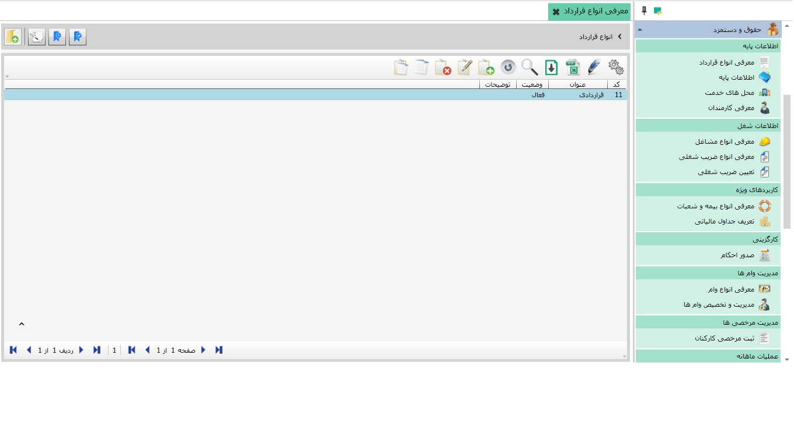
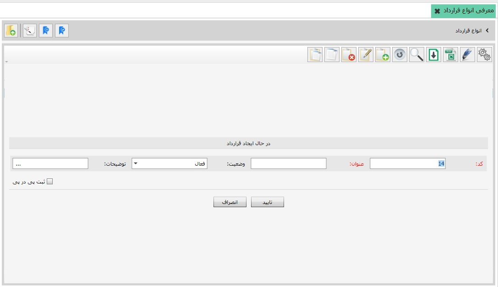
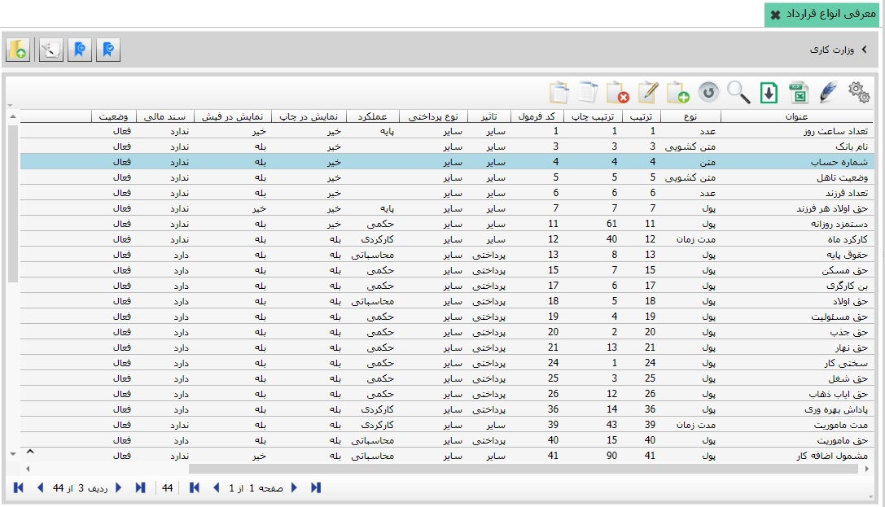
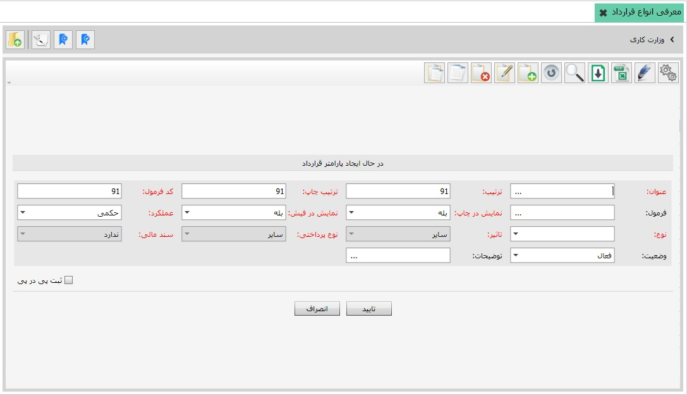
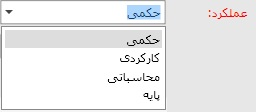
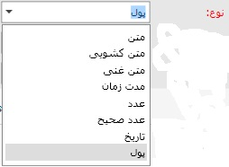
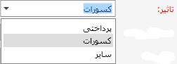
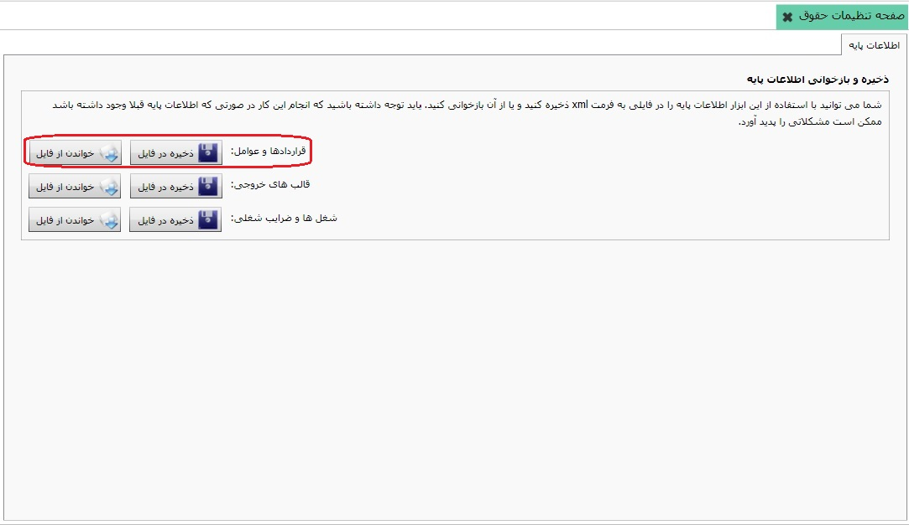

پنجره زیر باز می شود:
پنجره زیر باز می شود:
برای دسترسی به این صفحه از منوی سیستم حقوق دستمزد از بخش «تعریف اطلاعات پایه» روی گزینه «معرفی انواع قرارداد» کلیک کنید تا صفحه شکل زیر نمایش داده شود:
با استفاده کردن از امکانات صفحه ی بالا می توانید یک قرار داد جدید ایجاد کنید اگر از نوار ابزار گزینه ی اضافه را انتخاب کنید بعد از پر کردن فرم مورد نظر و کلیک کردن بر روی تایید، قرارداد جدید ایجاد می شود در سیستم حقوق و دستمزد نرم افزار سایان شما مجاز هستید به تعداد نیاز قرار داد تعریف کنید و برای هر یک از قرار داد ها به تعداد لازم پارامتر تعریف کنید، در ادامه به شما خواهیم آموخت چگونه قرارداد تعریف کنید چگونه پارامترهای لازم را ایجاد و تنظیم کنید. شکل بالا صفحه «معرفی انواع قرارداد» نمایش داده شده است، همان طور که مشاهده می کنید در سمت راست صفحه انواع قرارداد و عوامل زیر مجموعه آن به صورت درختی قرار دارد، در سمت چپ صفحه هم لیست انواع قرارداد تعریف شده در سیستم نمایش داده می شود. شما می توانید انواع قرارداد جدیدی تعریف کنید، برای این کار از جدول سمت چپ روی گزینه اضافه (F8) کلیک کنید تا فرم ایجاد قرارداد باز شود:
فیلد کد به صورت اتوماتیک درج می شود اما قابل ویرایش است، پس از ثبت سند دیگر نمی توانید کد آن را تغییر دهید. در فیلد عنوان، نام قرارداد مورد نظرتان را وارد کنید. وضعیت قرارداد را در حالت فعال قرار دهید، اگر نیاز بود توضیحات لازم را درج کنید و در انتها فرم را تایید نمایید تا قرارداد مورد نظرتان ایجاد شود.
با انتخاب قرارداد تعریف شده در نمودار درختی سمت راست یا دبل کلیک روی نام قرارداد در جدول سمت چپ می توانید لیست عوامل مربوط به آن قرارداد را مشاهده نمایید.
در شکل بالا لیست عوامل قرارداد با عنوان تمام وقت نمایش داده شده است. شما می توانید بر حسب نیاز عملیات دیگری نیز به لیست عوامل قرارداد اضافه کنید، برای این کار از نوار ابزار بالای جدول روی گزینه اضافه کلیک کنید، فرم ایجاد عامل به شکل زیر نمایش داده می شود:
فرم ایجاد عامل در شکل بالا نمایش داده شده است. عامل قرارداد دارای کد نمی باشد بنابراین فیلد کد غیر فعال می باشد. برای عامل ایجادی عنوانی مشخص کنید، در اینجا عامل مساعده در حال ایجاد می باشد. فیلد های ترتیب و کد فرمول به صورت اتوماتیک درج می شوند و شما می توانید آن را ویرایش کنید، فقط دقت کنید که مقادیر آن ها نمی تواند تکراری باشد. در فیلد فرمول نیز فرمول محاسبه عامل را وارد کنید، برای این کار روی علامت ... در فیلد فرمول کلیک کنید تا پنجره مربوط به آن باز شود:

در این قسمت می توانید فرمول مربوط به عامل مورد نظرتان را با استفاده از ابزار قرار داده شده در بالای پنجره ایجاد کنید. همان طور که می بینید کلیه عوامل تعریف شده برای قرارداد در این قسمت قرار گرفته اند که می توانید از آن ها به عنوان متغیرهای فرمول استفاده کنید.
در فیلد نمایش در چاپ می توانید تعیین کنید عامل ایجاد شده در چاپ نمایش داده شود یا خیر.
در فیلد عملکرد پنج گزینه قرار دارد. برخی عوامل در احکام صادر شده برای هر یک از کارکنان مقداردهی می شوند که عملکرد آن ها حکمی است. اگر گزینه کارکردی را انتخاب کنید به این معناست که عملکرد عامل بر اساس کارکرد ماه کارمندان محاسبه شود ، اگر از گزینه پایه استفاده کنید می توانیداز طریق منوی اطلاعات پایه پارامتر مورد نظر را یک بار برای همه پرسنلی که این قرارداد را دارند مشخص کنید و دیگر نیازی به مشخص ان پارامتر برای تک تک پرسنل نیست. اگرگزینه محاسباتی نشان می دهد که مقدار عامل ایجادی از طریق فرمول تعریف شده در فیلد فرمول محاسبه خواهد شد. ازگزینه پرسنلی برای مشخص کردن اطلاعات بیشتری از پرسنل(تعداد فرزند، نام بانک و....) مورد استفاده قرار میگیرد و محل ورود اطلاعات آن اطلاعات تکمیلی کارمندان است. برای عامل مساعده فیلد عملکرد را محاسباتی انتخاب می کنیم.
به تناسب عاملی که در حال ایجاد آن هستید می توانید یکی از گزینه ها را انتخاب نمایید. برای مثال نوع عامل مساعده از نوع پول می باشد.
در صورتی که در فیلد نوع، گزینه پول را انتخاب کرده باشید فیلد تاثیر فعال می گردد. با توجه به تاثیری که عامل در حال ایجاد بر حقوق کارکنان دارد می توانید یکی از گزینه های پرداختی، کسورات و سایر را انتخاب کنید. برای عامل مساعده تاثیر را کسورات انتخاب می کنیم.
در ادامه تعیین کنید که عامل مورد نظرتان سند مالی دارد و یا مایل هستید که این پارامتر در لیست و فیش نمایش داده شود یا خیر، سپس فیلد وضعیت را فعال قرار دهید و در انتها فرم را تایید نمایید تا عامل (مساعده) ایجاد شود.
به همین شکل می توانید انواع قرارداد برای سیستم تعریف کنید و برای هر یک عوامل مورد نظر آن ها را ایجاد کنید. برای سهولت کار فایل آماده ای به فرمت xml (که شامل قرارداد و عوامل مورد نیاز آن می باشد) در «صفحه تنظیمات حقوق» قرار داده شده است که می توانید آن را از فایل خواندن نمایید. برای این کار از بخش تنظیمات روی منوی «صفحه تنظیمات حقوق» کلیک کنید تا صفحه مربوط به آن باز شود:

با انتخاب گزینه
پنجره زیر باز می شود:
فایل قرارداد عمومی حقوق را انتخاب نموده و پنجره را تایید نمایید تا فایل قراردادها و عوامل آن ها در جدول انواع قرارداد قرار گیرد.

در شکل بالا قرارداد عمومی که از فایل xml خوانده شده است را به همراه عوامل آن مشاهده می کنید.
 با استفاده از
این دکمه میتوانید برای پارامترهایی که تعریف کرده اید ویژگی
تعریف کنید. ویژگی هایی مانند مشمول مالیات و یا مشمول بیمه که
برای محاسبه بیمه و مالیات در این قرارداد از آن ها استفاده میشود.
با استفاده از
این دکمه میتوانید برای پارامترهایی که تعریف کرده اید ویژگی
تعریف کنید. ویژگی هایی مانند مشمول مالیات و یا مشمول بیمه که
برای محاسبه بیمه و مالیات در این قرارداد از آن ها استفاده میشود.
با استفاده از این دکمه میتوانید برای پارامتری که در حالت انتخاب میباشد ویژگی هایی که در ایکن قبلی تعریف کرده اید را تخصیص دهید.
 از این دکمه برای برگشت به صفحه قبل استفاده میشود.
از این دکمه برای برگشت به صفحه قبل استفاده میشود.